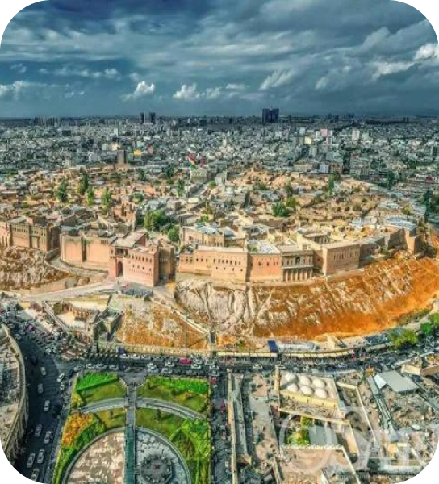
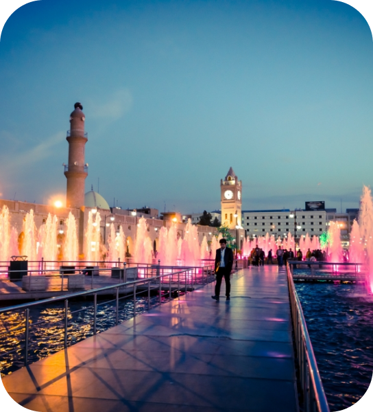
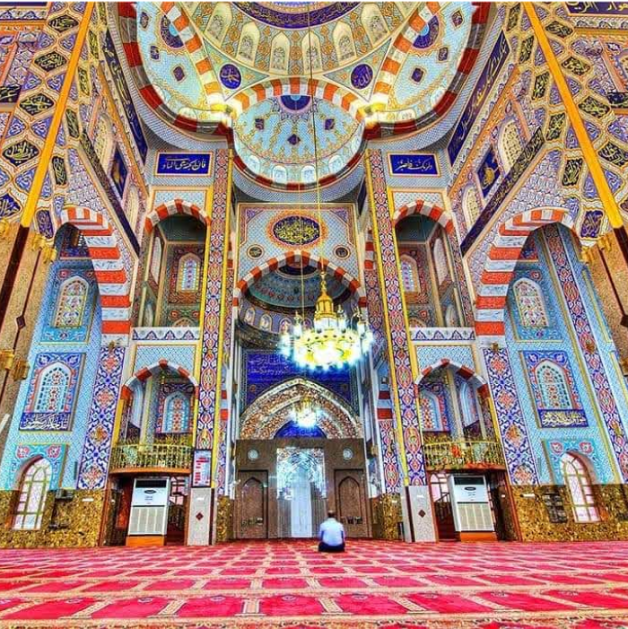
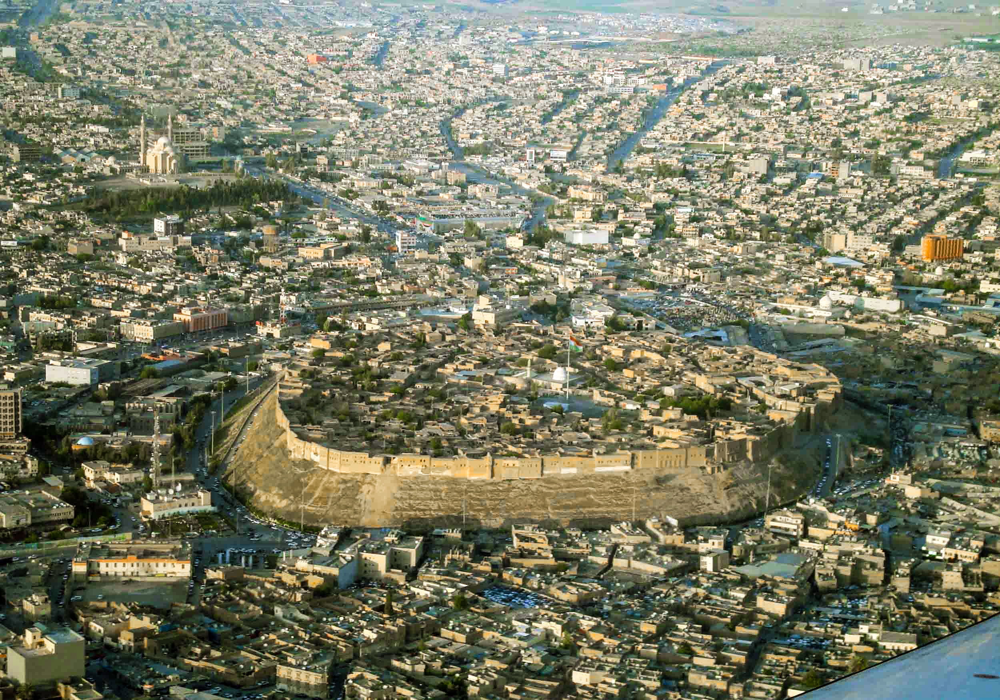
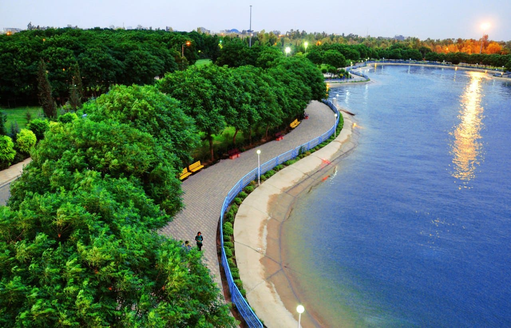
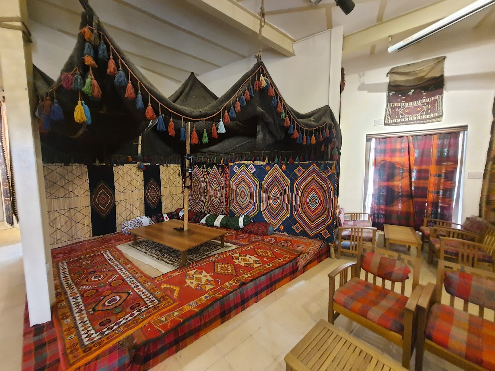
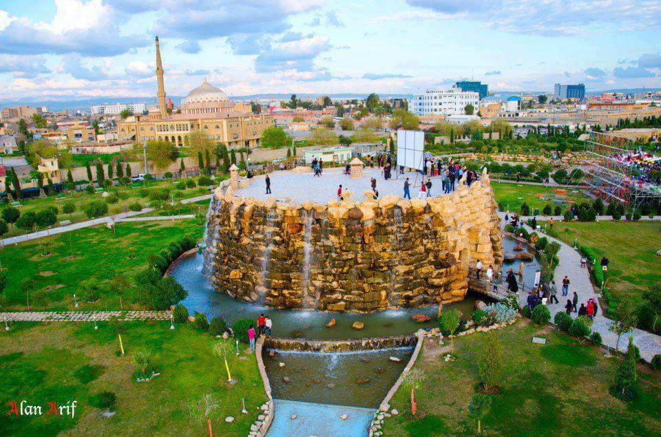

Home
My City
Heritage
CV
My interests
Contact
Log In
Sign Up
Erbil
Erbil is a city that seamlessly blends ancient history with modern development making it a unique and dynamic hub in the Middle East.
Watch Demo
 

Jalil Khayat Mosque
Erbil, Erbil Governorate, Iraq
4.7

Citadel of Erbil
Erbil, Erbil Governorate, 44001, Iraq
4.4

Samî Abdulrahman Park
Erbil, Erbil Governorate, Iraq
4.4

Kurdish Textile Museum
Qaisary,Erbil, Erbil Governorate, Iraq
4.3

Shanadar Park
Shanadar, Erbil, Erbil Governorate, Iraq
4.2